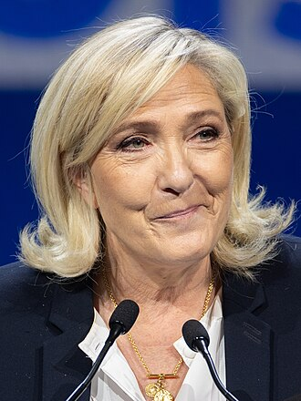

Survolez ou touchez une nuance de l'hémicycle pour en lire le détail.
50 nuances de politique
Hémicycle des sept nuances
Anneau extérieur : Assemblée nationale (540 sièges) · anneau intérieur : Sénat (329 sièges). Chaque anneau est proportionnel à ses sièges, avec une largeur minimale de 5° pour les très petites parts, prise sur les deux plus grandes. Les groupes non classés n'apparaissent pas.
Extrême gauche
Veut rompre avec le capitalisme, souvent par la mobilisation sociale ou la révolution. Internationaliste, elle se méfie des institutions représentatives.
Classification du ministèreBloc officiel « extrême gauche ». Pour les municipales 2026, le ministère de l'Intérieur y classe aussi LFI.
Contesté par LFI, dont le recours a été rejeté par le Conseil d'État le 27 février 2026.
Représentation au Parlement
70députés
13,0 % des sièges classés
13,0 % des sièges classés
1sénateur
0,3 % des sièges classés
0,3 % des sièges classés
Groupes : LFI-NFP à l'Assemblée ; un sénateur LFI, non inscrit (Gabriel Amard) au Sénat.
Candidats
- Nathalie ArthaudLutte ouvrière
- Anasse KazibRévolution permanente
- Selma LabibNPA – Révolutionnaires
- Jean-Luc MélenchonLa France insoumise
Gauche radicale
Veut transformer l'économie en profondeur (partage des richesses, services publics, planification écologique), mais par les urnes et dans le cadre des institutions.
Classification du ministèrePas un bloc officiel, c'est une catégorie d'analyse.
Contesté par l'UDR, dont le recours a été rejeté par le Conseil d'État le 27 février 2026.
Représentation au Parlement
17députés
3,1 % des sièges classés
3,1 % des sièges classés
18sénateurs
5,5 % des sièges classés
5,5 % des sièges classés
Groupes : Gauche démocrate et républicaine (GDR) à l'Assemblée ; Communiste, républicain, citoyen et écologiste – Kanaky (CRCE-K) au Sénat.
Candidats
- Fabien RousselParti communiste français
Gauche
Réformiste : social-démocratie et écologie politique. Redistribution, protection sociale et transition écologique, dans une économie de marché régulée.
Classification du ministèreBloc officiel « gauche ».
Représentation au Parlement
106députés
19,6 % des sièges classés
19,6 % des sièges classés
77sénateurs
23,4 % des sièges classés
23,4 % des sièges classés
Groupes : Socialistes et apparentés (68), Écologiste et Social (38) à l'Assemblée ; Socialiste, écologiste et républicain (62), Écologiste – Solidarité et Territoires (15) au Sénat.
Candidats
- Raphaël GlucksmannPlace publique
- Karim BouamraneParti socialiste
Centre
Mêle libéralisme économique et ouverture sur les questions de société. Cherche le compromis entre les deux camps et défend l'intégration européenne.
Classification du ministèreBloc officiel « centre ».
Représentation au Parlement
162députés
30,0 % des sièges classés
30,0 % des sièges classés
94sénateurs
28,6 % des sièges classés
28,6 % des sièges classés
Groupes : Ensemble pour la République (90), Les Démocrates (37), Horizons & Indépendants (35) à l'Assemblée ; Union centriste et Indépendants (63), RDPI (16), Les Indépendants – République et Territoires (15) au Sénat.
Candidats
- Édouard PhilippeHorizons
- Gabriel AttalRenaissance
Droite
Attachée à l'ordre, à l'autorité, à l'entreprise et à la maîtrise de la dépense publique. Conservatrice sur les valeurs, mais pleinement dans le cadre républicain.
Classification du ministèreBloc officiel « droite ».
Représentation au Parlement
47députés
8,7 % des sièges classés
8,7 % des sièges classés
124sénateurs
37,7 % des sièges classés
37,7 % des sièges classés
Groupes : Droite républicaine à l'Assemblée ; Les Républicains au Sénat.
Candidats
- Bruno RetailleauLes Républicains
Droite radicale
Plus dure que la droite classique sur l'immigration, la sécurité et l'identité nationale, et prête à rompre avec elle. La frontière avec l'extrême droite est discutée.
Classification du ministèrePas un bloc officiel, c'est une catégorie d'analyse. Pour les municipales 2026, le ministère de l'Intérieur classe l'UDR à l'extrême droite.
Représentation au Parlement
17députés
3,1 % des sièges classés
3,1 % des sièges classés
0sénateur
0,0 % des sièges classés
0,0 % des sièges classés
Groupes : Union des droites pour la République à l'Assemblée ; aucun décompte séparé : les sénateurs UDR siègent dans le groupe commun RN-UDR, compté en extrême droite au Sénat.
Candidats
Aucun candidat déclaré à ce jour.
Extrême droite
Nationalisme affirmé : priorité nationale, vision identitaire de la nation, hostilité à l'immigration, État fort.
Classification du ministèreBloc officiel « extrême droite ».
Contesté par le RN, dont le recours a été rejeté par le Conseil d'État le 11 mars 2024.
Représentation au Parlement
121députés
22,4 % des sièges classés
22,4 % des sièges classés
15sénateurs
4,6 % des sièges classés
4,6 % des sièges classés
Groupes : Rassemblement national à l'Assemblée ; groupe commun RN-UDR (15), dont les élus UDR au Sénat.
Candidats

Marine Le PenRassemblement national- Éric ZemmourReconquête